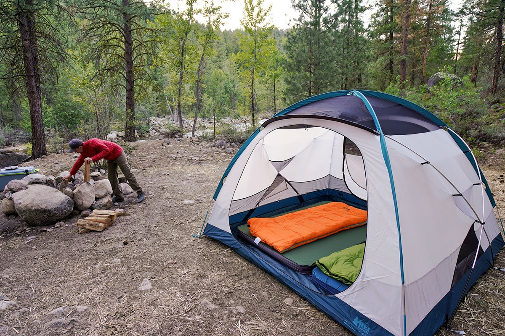
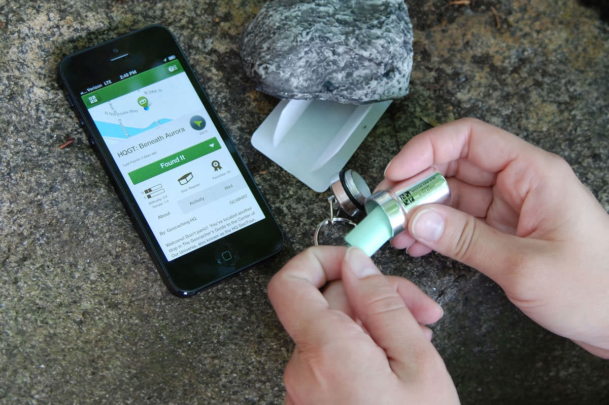
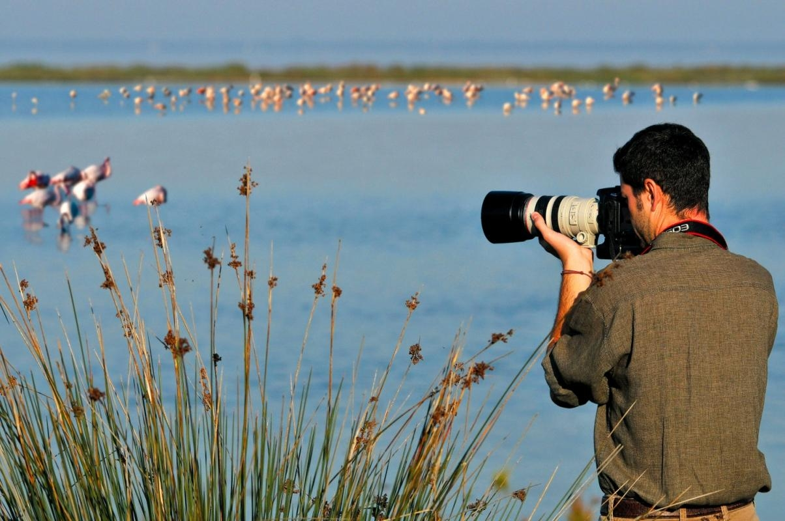
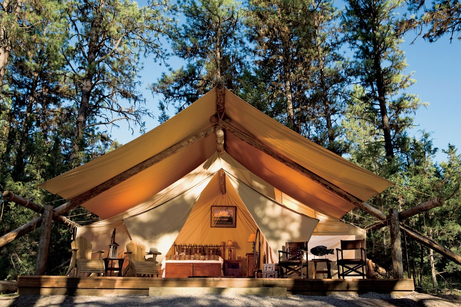
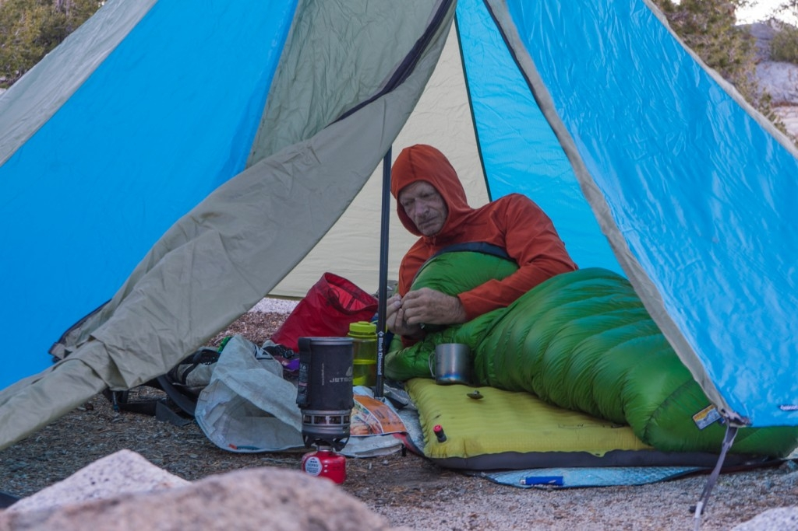
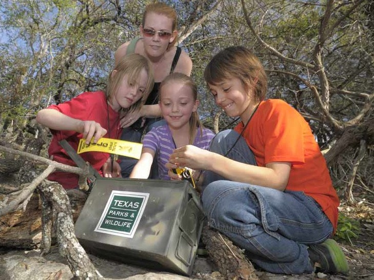
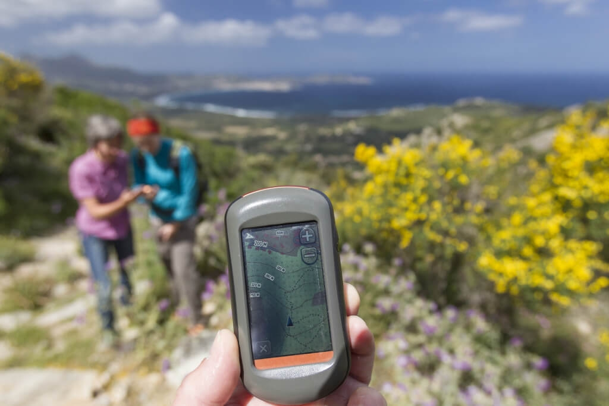

Домашни
Колекционерски
Креативни
Изработка
Обогатяващи
На открито
Социални
Спорт
На открито
Дейности, подходящи за сред природата.
Хобитата, които ни отвеждат извън дома обратно към природата имат способността да ни смирят, показвайки ни корените и реалният мащаб на живота.
Въпреки всичко, те крият определен риск, затова практикувайте на собствена отговорност.

Къмпингуване

Геокешинг

Наблюдение на птици
×
Къмпингуване




Ако сте изморени от градския шум и навалицата и желаете да се отдалечите от цивилизацията, грабнете палатката или
спалния чувал и отидете на къмпинг. Не забравяйте да вземете някакъв вид комуникационно устройство в случай на беда.
Къмпингуването може също да бъде и групова активност, а ако спането на земята не ви звучи привлекателно, глемпингът
(Glamping: glamour+camping) също е опция, набираща популярност.
×
Геокешинг




Геокешингът съчетава ориентирането, излета и решаването на пъзели. Целта е да намерите скрития от последния играч
предмет и да го поставите на друга, избрана от вас локация. Информация за координатите на тези кеширани обекти можете да
намерите в една от множеството платформи, занимаващи се с тази активност.
×


Наблюдение на птици
Това е релаксираща активност, за която ви трябва само леща и търпение. Може да ви звучи скучно, но от друга страна може
да се нарече и спокойно, а и навиците на тези крилати животни често се оказват забавни, увлекателни и интересни.